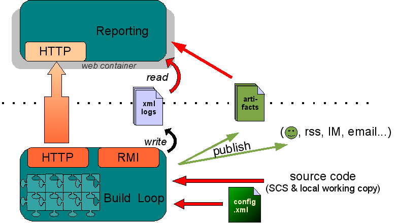

Overview
CruiseControl is composed of 3 main modules:
- the build loop: core of the system, it triggers build cycles then notifies various listeners (users) using various publishing techniques. The trigger can be internal (scheduled or upon changes in a SCM) or external. It is configured in a xml file which maps the build cycles to certain tasks, thanks to a system of plugins. Depending on configuration, it may produce build artifacts.
- the legacy reporting allows the users to browse the results of the builds and access the artifacts
- the dashboard provides a visual representation of all project build statuses.
This modularity allows users to install CruiseControl where it will best fit their needs and environment.
Using remoting technologies (HTTP, RMI), it is possible to control and monitor the CruiseControl build loop. Those are turned off by default for obvious security reasons.
CruiseControl can be installed from source, or using the all in one binary installation.
Further information can be found in this documentation and/or in the wiki.
Architecture Diagram
